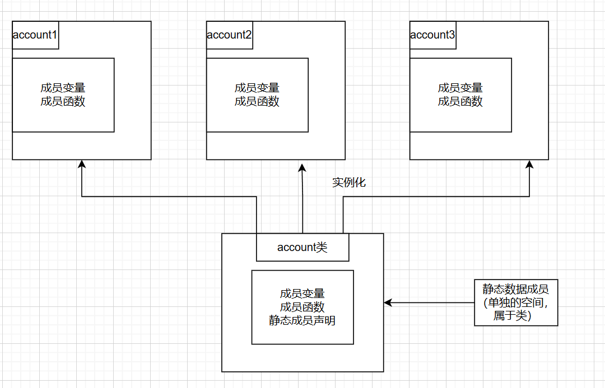
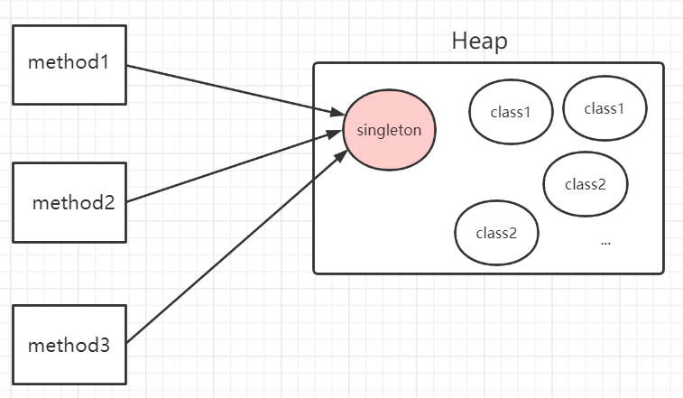
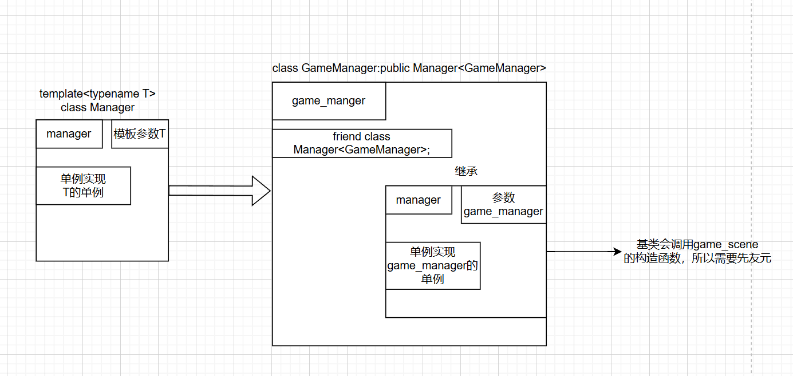

跟着大v老师学习的时候学习到了这个设计模式，因为马上要去gamejam，学长跟我说滥用单例就好了（bushi，就因此感兴趣了解一下，顺带巩固一些C++语法知识点,学的时候注意不到，用的时候就印象深刻了。
接下来我会先对照课本复习一下类内的静态变量，然后对照网上的单例文章和课程代码写点东西(因为锁和线程我不了解，就基于大V老师教的简单写写)
类内的静态成员
静态数据成员
静态数据成员：类的静态数据成员拥有一块单独的存储区，所有这个类的对象的静态数据成员都共享这一块空间（这就像银行所有的账户都享有同样的利率）。但静态数据成员是属于类的，他的名称只在类的范围内有效（就是实例化的对象无法调用），并且可以是私有的也可以是公有的，这样可以避免其他全局函数的干扰。
定义：
class SavingAccount
{
private:
static double rate; //定义了一个私有静态成员变量
}
注意：静态数据成员属于类，不属于实例化的对象，从而在实例化对象为对象分配空间时并不包含静态数据成员的空间
静态数据成员的空间必须单独分配且只分配一次，为静态数据成员分配空间成为静态数据成员的定义（一般在cpp实现文件中）
//SavingAccount.cpp
//作用域::静态成员变量名
double SavingAccount::rate=0.05; //为rate分配空间，并赋予了初值，若没有这个定义，链接时会报错
由于静态数据成员是属于类的，因此可以通过作用域运算符用类名直接调用，如”类名::静态数据成员名“。
从每个对象的角度来看，似乎是实例化对象的一部分，可以像普通的成员一样用对象引用$Account1.rate$。但是指向的都是同一块空间。
静态成员函数
静态成员函数：专门用于操作静态数据成员。
于普通函数一样就是在声明的前面加上static，静态成员函数的定义既可以写在类内，也可以写在类外。（在类外定义的时候不需要加static）
例如，我要修改savingaccount的rate
static void SetRate(double newRate)
{
rate=newRate;
}
注意：静态成员函数是为类服务的，从而实例化对象调用的时候静态函数不会像普通函数一样有隐式的$*this$指针可以访问实例化对象内的普通成员变量和普通成员函数。
（大概率静态成员函数和静态数据成员变量都存放在一个存储空间且有联系）静态成员函数只能调用静态数据成员和静态成员函数。
调用的话，有实例化对象可以实例化对象调用
Account.SetRate(0);
就算没有实例化对象，也可以使用类名来调用，”类名::静态成员函数名（）“
SavingAccount::SetRate(0);
静态常量数据成员
当有时候整个类需要共享一个常量，就可以用static const来声明。
首先区分一下常量数据成员和静态常量数据成员
常量数据成员是针对不同的实例化对象的，每个实例化对象的常量数据成员各不相同，const声明
静态常量数据成员是属于整个类，所有实例化对象都一样，是static const声明的
初始化：
普通数据成员可以在对象定义的构造函数初始化
静态数据成员实在静态数据成员定义的时候初始化，一般是在类外定义。
常量静态数据成员竟然可以在类内定义的时候初始化（只能是整型），注意不是构造函数，是在类内声明的时候直接赋值
class SavingAccount
{
static const int rate=10;
}//类似这样
注意：如果静态常量数据成员是非整型，则不能在类内赋初值，在类中只能声明，在类外定义
static const double st; //类内声明
//类外定义的时候可以不写static,和函数一样
const SavingAccount::st=1.5;
所以不管什么还是建议在类外定义，以防记混报错。
单例化的一些概念
简单看了一下，不太懂锁和线程这方面的知识点，所以就对着文章简单写点吧，后面了解了有机会再细说
1. 什么是单例模式
单例模式是指在内存中只会创建且仅创建一次对象的设计模式。在程序中多次使用同一个对象且作用相同时，为了防止频繁地创建对象使得内存飙升，单例模式可以让程序仅在内存中创建一个对象，让所有需要调用的地方都共享这一单例对象。
2. 单例模式的类型
单例模式有两种类型：
- 懒汉式：在真正需要使用对象时才去创建该单例类对象
- 饿汉式：在类加载时已经创建好该单例对象，等待被程序使用
- 懒汉式单例模式：在首次获取实例时创建。这种方式在多线程环境下存在线程安全问题，需要通过加锁或双重检查等方式解决。
public class Singleton
{
private static Singleton singleton;
private Singleton(){}
public static Singleton getInstance()
{
if (singleton == null)
{
singleton = new Singleton();
}
return singleton;
}
}
- 饿汉式单例模式：在类加载时就创建实例。这种方式在多线程环境下是线程安全的，但可能会浪费内存空间。
public class Singleton
{
private static final Singleton singleton = new Singleton();
private Singleton(){}
public static Singleton getInstance()
{
return singleton;
}
}
后面的我也不懂了，有兴趣就去csdn去看看吧
课程代码的单例实现（Manager类）
这个gameManager和Manager关系就感觉有点绕
就像大V老师说的通过继承的方式，让子类能自动的形成构造->就对基类引入了模板。
通过对基类的单例实现，然后将子类是继承基类（用子类作为模板参数传入的基类）实现。
我的理解就如同下图
这样就是实现了继承子类都可以实现单例的功能
先看manager.h的内容吧
#ifndef _MANAGER_H_
#define _MANAGER_H_
template<typename T>
class Manager
{
public:
//静态成员函数只可以修改静态数据成员和静态成员函数
//通过静态成员函数instance（）可以实现单例的构造
static T* instance()
{
if (!manager) //如果静态数据成员（单例对象）未实例化，则实例化
manager = new T();
return manager; //返回静态成员指针
}
~Manager()=default;
private:
static T* manager; //声明静态成员变量
protected:
//将构造函数访问特性设置为protected，那么就无法再外界构造对象，保证了单例化的唯一性
Manager() = default;
//删除复制构造函数和=号的运算符重载，也是为了防止外界构造对象
Manager(const Manager&) = delete;
Manager& operator=(const Manager&) = delete;
};
//将单例的对象设置为静态数据成员，这里是静态数据成员的定义，换种角度就是为其分配空间，不然会报错
template<typename T>
T* Manager<T>::manager = nullptr;
#endif // ! _MANAGER_H_
注意：以上都是模板参数，最后生成的静态数据成员都是子类对象，一些细节也在里面说明了。
我们再来看看**”game_scene.h”**
#ifndef _GAME_MANAGER_H_
#define _GAME_MANAGER_H_
#include "manager.h"
class GameManager:public Manager<GameManager>
{
//因为在继承的时候会调用GameManager类的构造函数，所以需要声明一下友元
friend class Manager<GameManager>;
protected:
GameManager(){}
~GameManager(){}
};
#endif // !_GAME_MANAGER_H_
最后看main.cpp
#define SDL_MAIN_HANDLED
#include<iostream>
#include "game_manager.h"
int main(int argc,char** argv)
{
//这就很好理解了，instance接受的其实就是单例化静态成员的那块空间的地址，这样main函数里就可以用了
GameManager* instance = GameManager::instance();
return 0;
}
大体上课程就是如此实现单例化和继承单例化功能，从而保证对象的唯一性。